Music is liquid architecture;
— Goethe
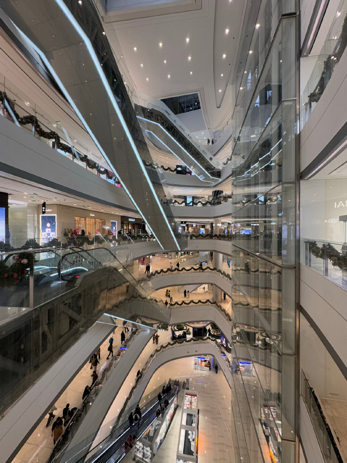
走进商场的一瞬间，你的步伐不再从容。
不是因为紧张 —— 是地面的材质、光线的角度、
气味的浓度，在你意识到之前就已经改变了你。
建筑是唯一一种绕过语言、直接作用于身体的艺术。
它不通过命题说服你，而是在你有机会反思之前，
就完成了对你的定向。
大理石/木地板/地毯
决定声音反馈
塑造步速与姿态
焦点·遮蔽·视距
构造注意力的
等级制度
绕过海马体
理性过滤
直接激活情绪记忆
温度场的不均匀
控制停留时长
与行为节奏
混响时间
塑造空间感知体积
决定情绪基调
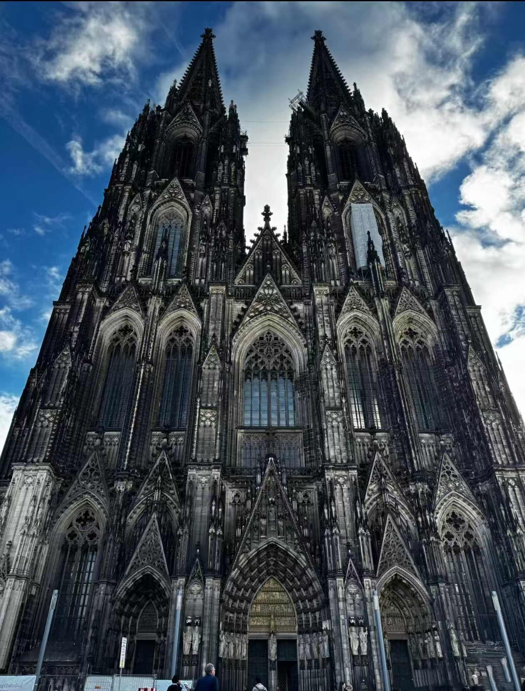
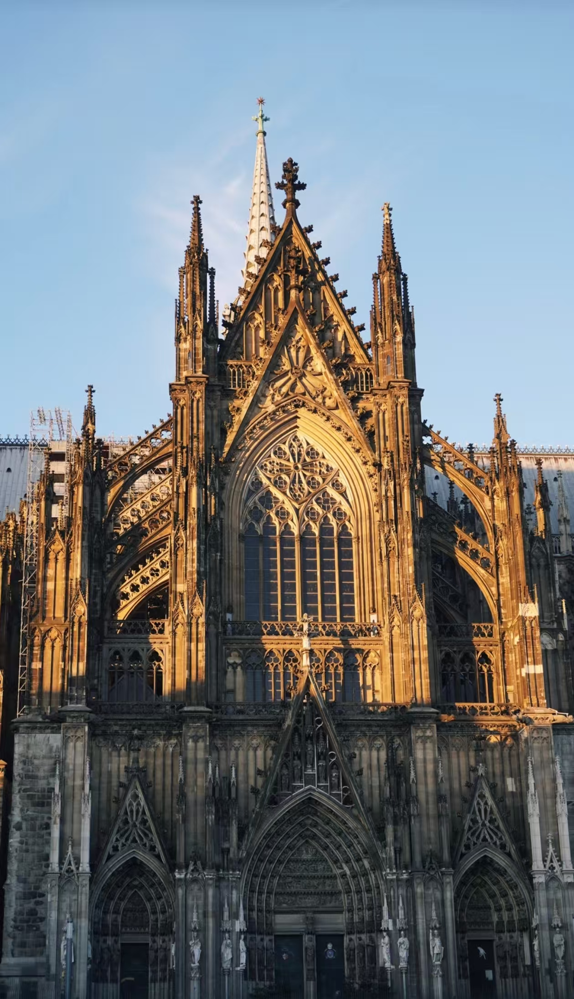
i.classList.remove('active'));this.classList.add('active')">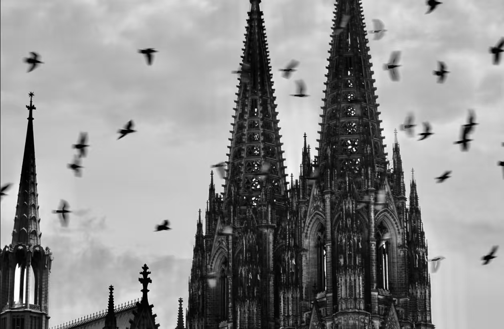
i.classList.remove('active'));this.classList.add('active')">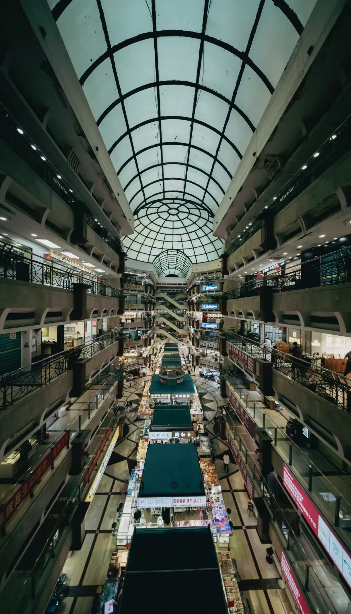
i.classList.remove('active'));this.classList.add('active')">尖拱 + 飞扶壁解放侧墙 → 彩色玻璃窗成为可能。自然光被转化为有颜色、有方向性的神圣符号。
格里高利圣咏专门为此混响参数创作。人声与管风琴声获得一种"来自无处"的弥漫性。
这不是隐喻，是直接的体感输入。在你抬头之前，建筑已经让你变小了。
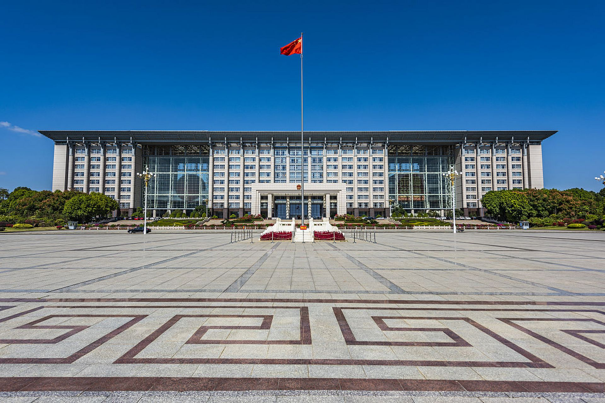
罗马神庙台阶故意高于人体工学舒适值，迫使人躬身抬腿。
巨大体量使个体"无法自我感知"。
进入行为本身变成了仪式性的矮化。
巨大体量 · 空旷广场 · 超尺度大门
个体在空间中无法自我感知
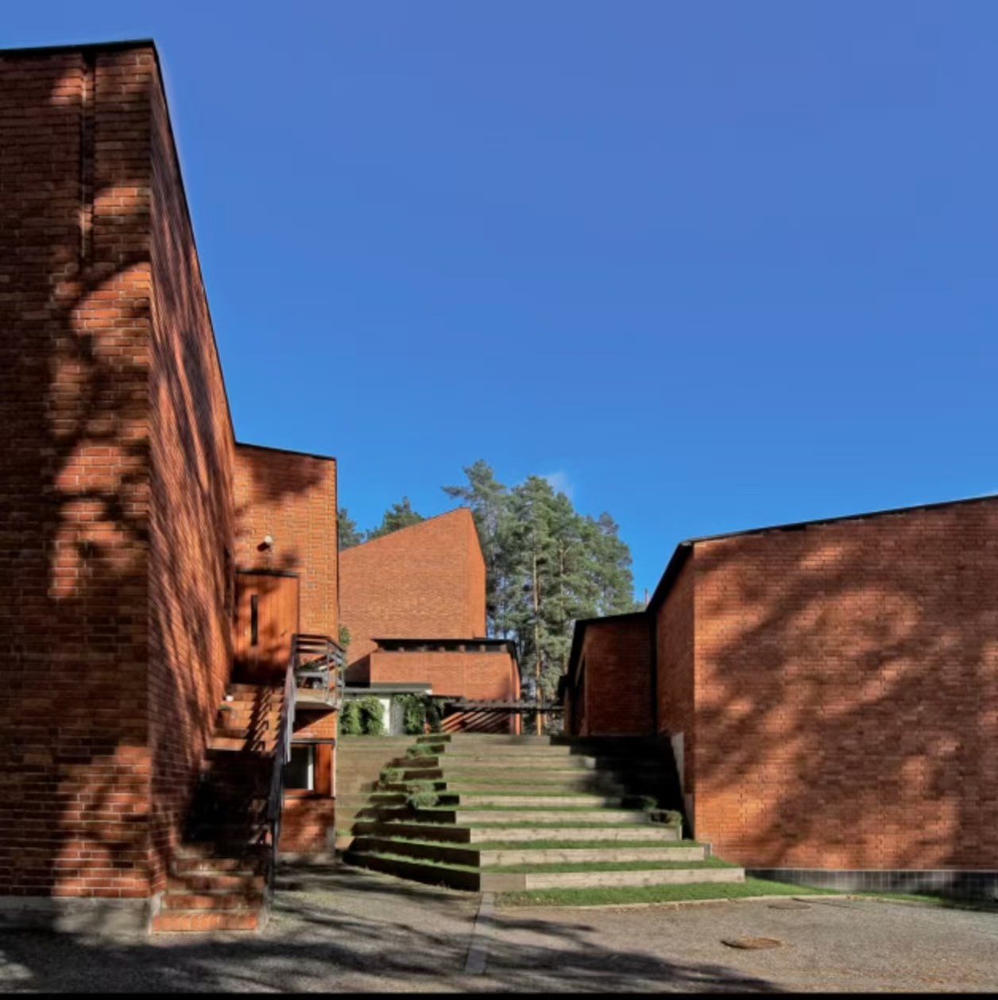
芬兰 · 珊纳特赛罗市政厅 · 阿尔托设计
压低体量 · 木材触感 · 无台阶入口
权力来自服务，而非威慑
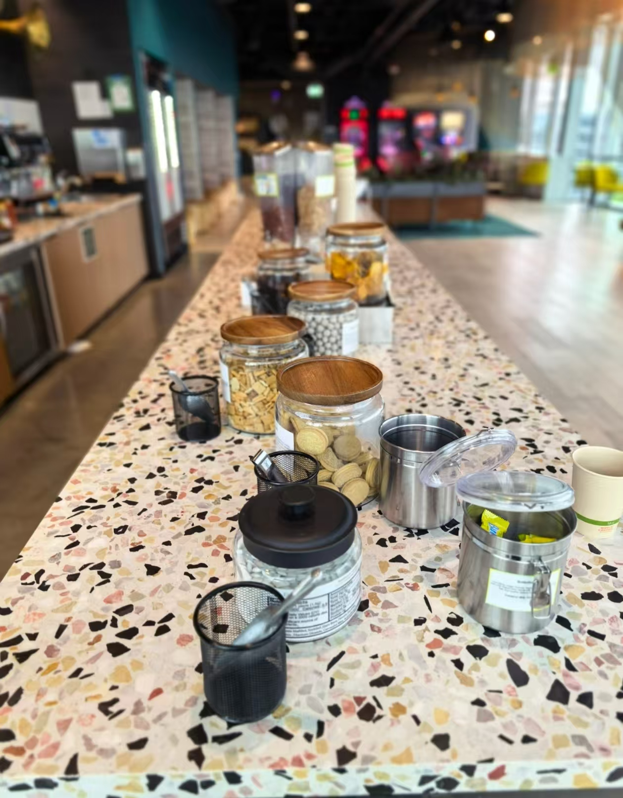
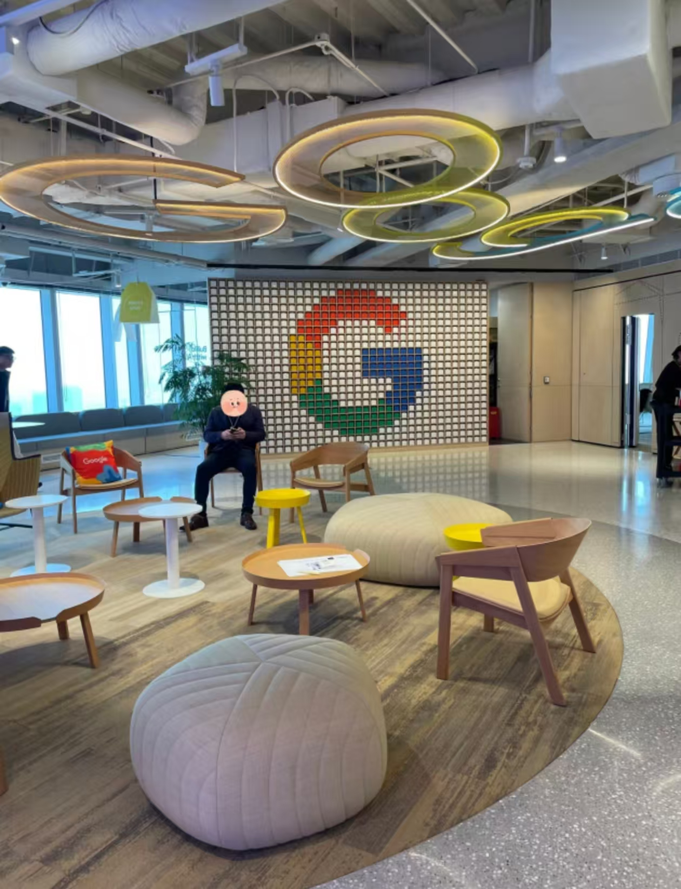
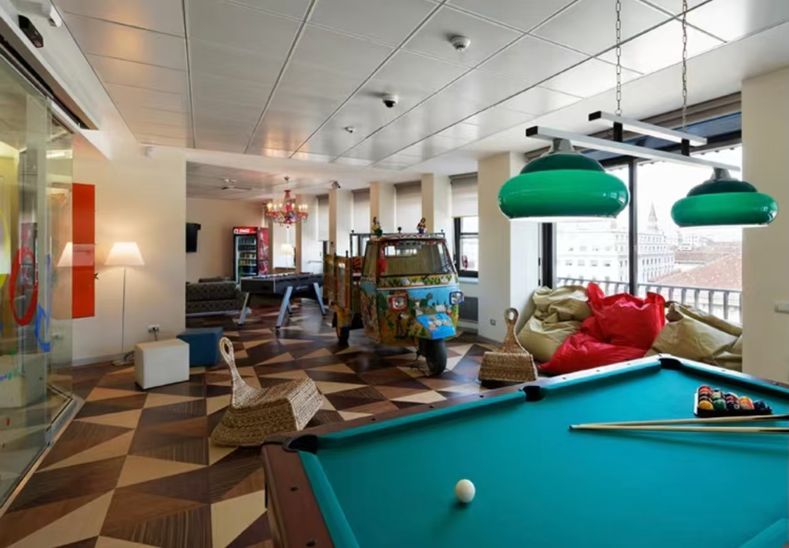
泰勒主义用玻璃隔间监控你
开放式办公让你自我监控
谷歌式的滑梯和咖啡吧
让你自愿不想离开
玻璃隔间 · 全景监狱
取消隐私 · 自我监控内化
滑梯·游戏室·咖啡吧
延长停留时间
身份与公司绑定
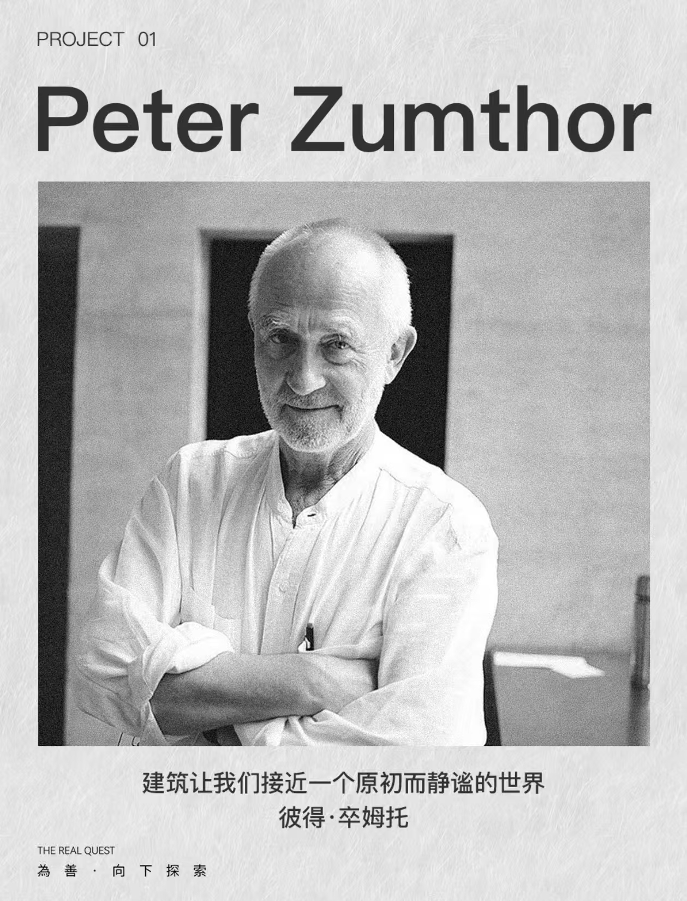
"你走进一个房间，
在你说出任何关于这个房间的命题之前，
你已经对它有了一个完整的情绪判断。"
—— Peter Zumthor《建筑氛围》
物质性的存在本身：墙体、屋顶、地面的实体感与重力感
材料之间存在"相近性临界点"——有些共鸣，有些抵消
每个空间有独特的声学签名。"沉默是什么质地的？"
温度是情绪记忆的载体。外婆厨房的温暖是皮肤的记忆
物品是建筑与人之间的中介，让冰冷墙体获得生活感
优雅的诱导艺术——让人自由漫步，又在不知不觉中遵循预设路径
窗户如何框取外部，门如何制造过渡，屋檐创造"既在内又在外"的阈限
距离与亲密性的空间编码。有些空间让人疏离，有些促发相遇
照明是功能性的，光是现象学的。意义来自光与阴影的边界——"让时间变得可见"
"如果形式不能打动我，我就回到起点，从头再来。"—— 卒姆托
如果建筑是一种感知政治……
以下三个中国商场，民间风水怎么看？
（纯民俗故事，无科学依据，只当趣味参考）
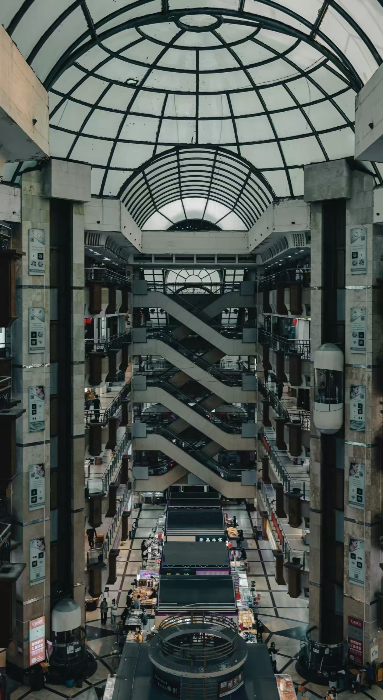
上下九步行街 · 老西关最热闹的地段
古代乱葬岗旧址
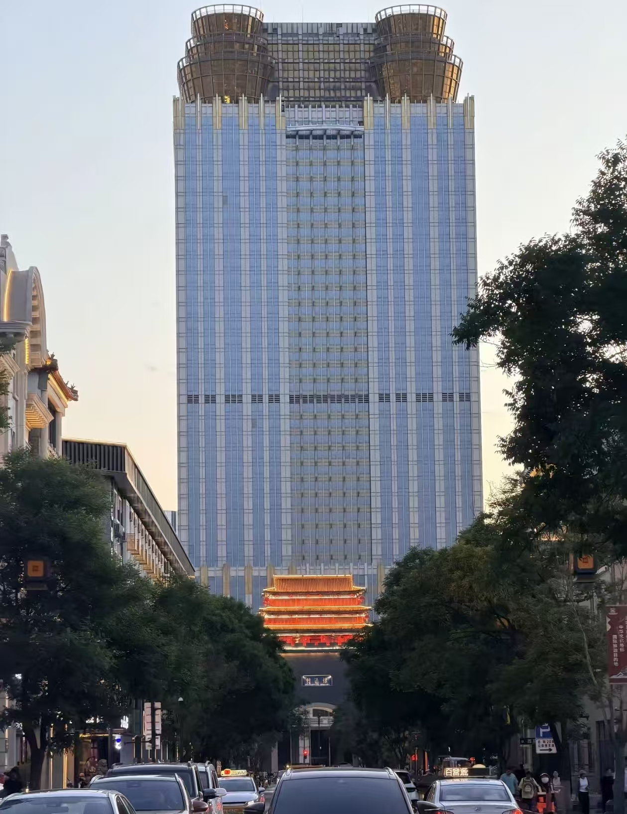
青年大街 · 六百多年关公庙坐镇正中
沈阳古城正中心
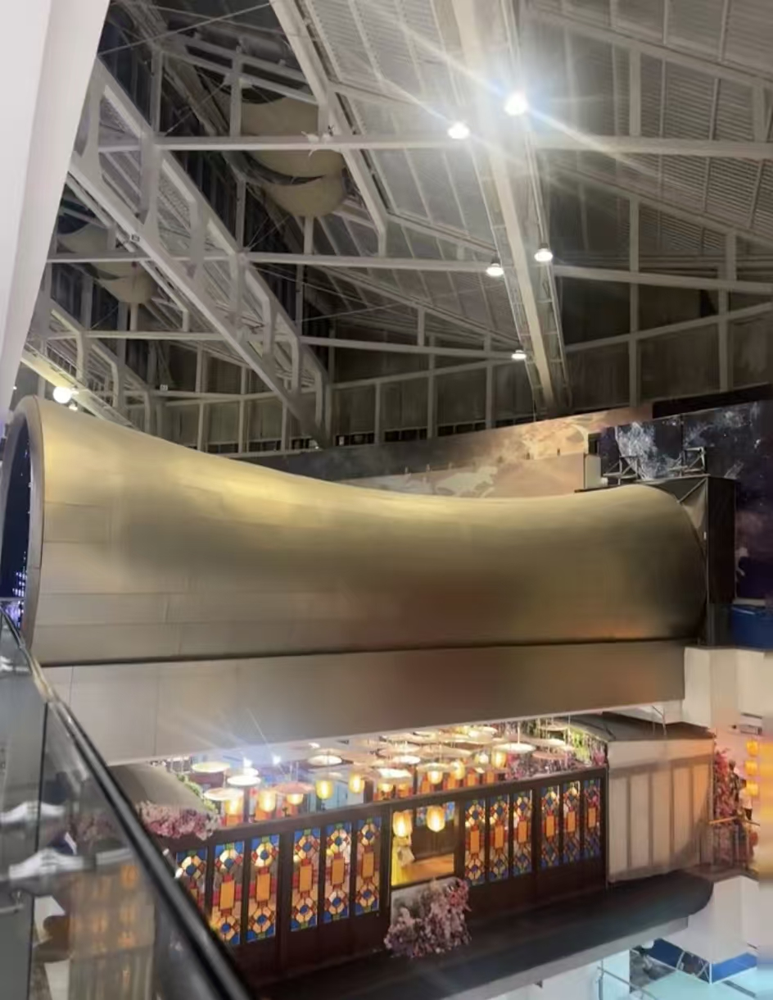
天河核心商圈 · 金色金属舱悬空中庭
自然科学馆入口"时光隧道"
玻璃穹顶 = 世俗版彩色玻璃
垂直中庭 = 现代版教堂中殿
光线的神圣化 → 商品的神圣化
超尺度入口 → 空间威慑
超大室内立面 → 视觉压迫
顾客在建筑面前"矮化"
引导性动线 → 行为控制
无时钟·无清晰出口 → 时间模糊
香氛+音乐+温度 → 环境叙事无缝化
消费者以为自己主动在逛 → 实际上被流线·气味·光线所引导
既不完全是客体，也不完全是主体。
这个状态比被控制更危险——因为它保留了主体的幻觉。
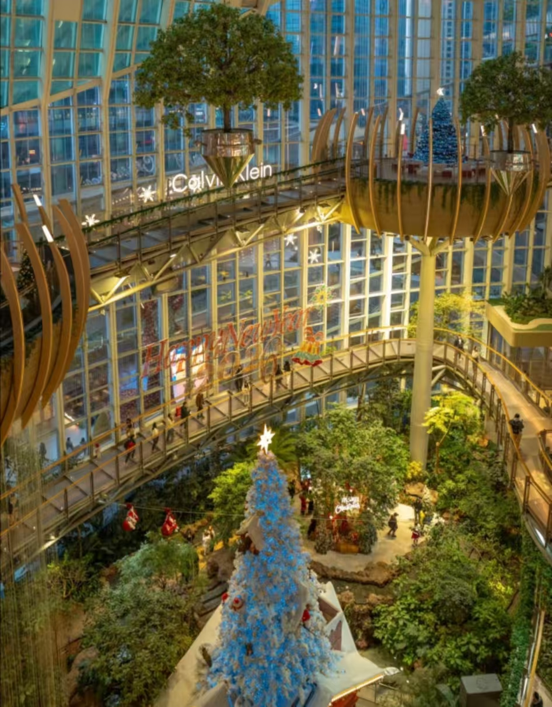
奢侈品区的「身份预知」机制：
顾客在消费之前，已经通过空间体验完成了一次自我升格的叙事。
商铺不是赢家。
商场才是。
下次你走进一座商场，问问自己：
是谁在消费谁？
直接作用于身体
在你反思之前
已完成定向
台阶·光线·材质
每一个细节
都是政治
下次感到"舒适"
或"压抑"时，问问：
是建筑想要的吗？
"在你开口说话之前，
先给你一个值得居住的视界。"
—— 致敬卒姆托
谢谢大家。欢迎提问。